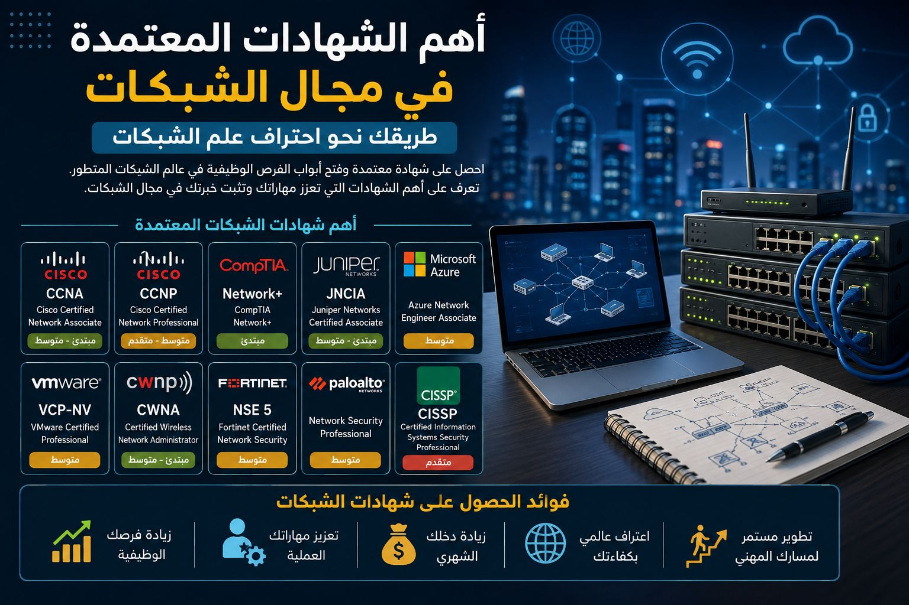

أهم الشهادات المعتمدة في مجال الشبكات 2026: دليلك من المبتدئ إلى الاحتراف

إذا كنت تريد بناء مسار مهني في الشبكات Network Engineering، فغالبًا ستجد أمامك عشرات الشهادات: CCNA وNetwork+ وCCNP وJuniper وAzure وFortinet وPalo Alto وغيرها.
لكن السؤال الحقيقي ليس:
ما أقوى شهادة شبكات؟
بل:
ما الشهادة المناسبة لمستواي والمسار الذي أريد التخصص فيه؟
فالشخص الذي يريد تأسيس نفسه في Networking يحتاج مسارًا مختلفًا عن مهندس يريد التخصص في Cloud Networking، والشخص الذي يتجه إلى Network Security يحتاج شهادات مختلفة عن متخصص Wireless Networks.
في هذا الدليل ستتعرف على أهم الشهادات المعتمدة في مجال الشبكات في 2026، ومستوى كل شهادة، والجهة المانحة لها، ولمن تناسب، والمسار الأفضل للانتقال من المبتدئ إلى المستويات المتقدمة.
إذا كنت تبدأ من الصفر تمامًا، يمكنك أيضًا الاطلاع على دورة CompTIA Network+ لتأسيس مهارات الشبكات، أو الانتقال مباشرة إلى دورة CCNA 200-301 من معهد مسارتك إذا كان هدفك التخصص بصورة عملية في Networking.
شهادات الشبكات المهنية هي Credentials تصدرها جهات تقنية مثل Cisco وCompTIA وMicrosoft وJuniper وغيرها لقياس مجموعة محددة من المعارف والمهارات.
وقد تغطي موضوعات مثل:
أساسيات الشبكات.
Switching.
Routing.
TCP/IP.
IPv4 وIPv6.
Wireless Networking.
Network Security.
Network Troubleshooting.
Cloud Networking.
Network Automation.
Virtualization.
SD-WAN.
لكن هناك نقطة مهمة:
الحصول على الشهادة لا يعني تلقائيًا أنك أصبحت مهندس شبكات محترفًا.
الشهادة تثبت اجتياز متطلبات محددة، بينما الخبرة المهنية تحتاج أيضًا إلى:
فهم + Labs + Troubleshooting + مشاريع + ممارسة عملية.
| الشهادة | الجهة | المستوى | المسار الأساسي | مناسبة لمن؟ |
|---|---|---|---|---|
| CompTIA Network+ | CompTIA | مبتدئ | Networking Fundamentals | من يبدأ من الصفر |
| CCNA | Cisco | مبتدئ – متوسط | Enterprise Networking | من يريد التخصص في الشبكات |
| CCNP Enterprise | Cisco | متوسط – متقدم | Enterprise Networks | مهندسو الشبكات ذوو الخبرة |
| JNCIA-Junos | Juniper | مبتدئ – متوسط | Juniper Networking | مستخدمو بيئات Juniper |
| Azure Network Engineer Associate | Microsoft | متوسط | Cloud Networking | مهندسو Azure والشبكات السحابية |
| CWNA | CWNP | مبتدئ – متوسط | Wireless Networking | متخصصو Wi-Fi |
| VCP-NV | VMware/Broadcom | متوسط | Network Virtualization | متخصصو NSX والافتراضية |
| NSE 5 Secure Networking | Fortinet | متوسط | Network Security | مسؤولو Fortinet والشبكات الآمنة |
| Network Security Professional | Palo Alto Networks | متوسط | Network Security | مستخدمو Palo Alto |
| CISSP | ISC2 | متقدم | Cybersecurity | أصحاب الخبرة المتجهون للأمن |
لا يوجد ترتيب واحد صحيح للجميع.
الأفضل يعتمد على الوظيفة التي تريد الوصول إليها.
CompTIA Network+ من أشهر الخيارات لمن يريد تعلم Networking دون الارتباط بمصنّع واحد.
النسخة الحالية التي يعتمد عليها التدريب هي N10-009، وتغطي مفاهيم الشبكات والبنية التحتية والتشغيل والأمن واستكشاف الأعطال. وتقدم دورة مسارتك الحالية تدريبًا مخصصًا لهذه النسخة.
ماذا تتعلم في Network+؟
Network Concepts.
IP Addressing.
Routing وSwitching Fundamentals.
Network Devices.
Wireless.
Network Operations.
Network Security.
Troubleshooting.
لمن تناسب؟
الطلاب.
المبتدئين في IT.
موظفي Technical Support.
من يريد فهم الشبكات قبل CCNA.
من يريد معرفة Vendor-Neutral.
إذا كنت جديدًا تمامًا على Networking، ابدأ من دورة CompTIA Network+ N10-009.
Cisco Certified Network Associate – CCNA هي شهادة Associate من Cisco تركز على مجموعة واسعة من مهارات Networking، بما في ذلك Network Fundamentals وNetwork Access وIP Connectivity وIP Services والأمن والأتمتة. Cisco تعرض CCNA ضمن مسار شهاداتها المهنية الحالي.
إذا كان Network+ يعطيك صورة عامة عن الشبكات، فإن CCNA تجعلك تدخل بصورة أعمق في تشغيل وإعداد الشبكات.
أهم موضوعات CCNA
IPv4 وIPv6.
Subnetting.
VLAN.
Trunking.
STP.
Routing.
OSPF.
NAT.
DHCP.
ACL.
Wireless.
Network Security.
Automation.
المستوى
مبتدئ إلى متوسط.
لمن تناسب؟
Network Technician.
Network Support.
NOC Engineer.
Junior Network Engineer.
IT Infrastructure Specialist.
إذا كنت محتارًا في محتوى الشهادة، اقرأ ما هي شهادة CCNA ولماذا تعتبر مهمة في عالم الشبكات؟.
وللتحضير العملي يمكنك الانتقال إلى دورة CCNA 200-301 في معهد مسارتك.
هذا من أكثر الأسئلة شيوعًا.
| Network+ | CCNA |
|---|---|
| Vendor-Neutral | مرتبطة بتقنيات Cisco |
| تأسيس عام | Networking أكثر عمقًا |
| مناسبة للمبتدئ جدًا | مناسبة للمبتدئ الجاد في الشبكات |
| Concepts واسعة | Routing وSwitching بصورة أعمق |
| بداية ممتازة لـIT | بداية قوية لـNetwork Engineering |
اختَر Network+ إذا:
تريد فهم Networking بصورة عامة قبل التخصص.
اختَر CCNA إذا:
قررت بالفعل أنك تريد بناء مسار مهني في الشبكات ومستعد للتطبيق العملي.
ولا يشترط الحصول على Network+ قبل CCNA.
بعد اكتساب أساس قوي وخبرة عملية، يأتي مستوى أكثر تقدمًا وهو:
Cisco Certified Network Professional – CCNP Enterprise
وتوضح Cisco أن CCNP Enterprise مخصصة لإثبات القدرة على توسيع وصيانة Enterprise Networks، وتشمل تقنيات Enterprise Infrastructure وVirtualization وSecurity وAutomation.
وللحصول عليها يجب اجتياز:
Core Exam + Concentration Exam واحد تختاره.
المستوى
متوسط إلى متقدم.
مناسبة لـ:
Network Engineer.
Senior Network Engineer.
Enterprise Network Engineer.
Network Infrastructure Engineer.
هل أبدأ بـCCNP مباشرة؟
نظريًا يجب النظر إلى متطلبات Cisco الحالية، لكن عمليًا إذا لم تكن لديك معرفة بمستوى CCNA فستجد المحتوى أكثر صعوبة بكثير.
لذلك المسار المنطقي غالبًا:
Networking Fundamentals CCNA خبرة عملية CCNP
Cisco ليست الشركة الوحيدة المستخدمة في Enterprise Networking.
هناك أيضًا Juniper Networks.
وتقدم شهادة:
Juniper Networks Certified Associate – Junos (JNCIA-Junos)
وتصف Juniper الشهادة بأنها مناسبة لمتخصصي الشبكات الذين يمتلكون معرفة من مستوى مبتدئ إلى متوسط في Networking ونظام Junos.
ماذا تتعلم؟
Networking Fundamentals.
Junos OS.
Interfaces.
Routing Fundamentals.
Routing Policy.
Firewall Filters.
Monitoring.
Configuration.
لمن تناسب؟
إذا كنت تعمل أو تخطط للعمل في مؤسسة تستخدم:
Juniper Routers أوSwitches أوبيئة Junos.
Juniper حدّثت اختبار JNCIA-Junos مجددًا في أبريل 2026، لذلك يجب دائمًا مراجعة النسخة الحالية قبل البدء في التحضير.
المقال القديم كان يضع:
Azure Fundamentals – AZ-900
كواحدة من أهم شهادات Networking.
وهنا يجب التفريق.
AZ-900 ممتازة لفهم Azure وCloud Fundamentals، لكنها ليست شهادة Network Engineer متخصصة.
الشهادة الأقرب لمسار الشبكات هي:
Microsoft Certified: Azure Network Engineer Associate
ويرتبط بها اختبار:
AZ-700
وتوضح Microsoft أن المتخصص في هذا الدور يعمل على تخطيط وتنفيذ وإدارة حلول Azure Networking، بما يشمل Core Network Infrastructure وHybrid Connectivity وApplication Delivery وPrivate Access وNetwork Security.
المستوى
متوسط.
مناسبة لـ:
Network Engineers.
Cloud Engineers.
Azure Administrators.
Infrastructure Engineers.
أهم الموضوعات
Azure Virtual Networks.
Routing.
Hybrid Connectivity.
VPN.
Load Balancing.
Private Access.
Network Security.
Monitoring.
إذا لم تتعامل مع Azure من قبل، فيمكن أن تبدأ أولًا من دورة Microsoft Azure Fundamentals AZ-900، ثم تنتقل لاحقًا إلى AZ-700.
إذا كنت تريد التخصص في:
Wireless Networking
فهناك مسار كامل مختلف عن Routing وSwitching التقليدي.
ومن أشهر شهاداته:
Certified Wireless Network Administrator – CWNA
وتصف CWNP شهادة CWNA بأنها الشهادة التأسيسية في برنامجها المتخصص في Enterprise Wi-Fi.
تتناول موضوعات مثل:
RF Fundamentals.
Wi-Fi.
802.11.
Antennas.
WLAN Design Concepts.
Security.
Troubleshooting.
المسار بعد CWNA
يمكنك لاحقًا الانتقال إلى شهادات مثل:
CWSP.
CWDP.
CWAP.
CWNE.
وتوضح CWNP أن CWNA صالحة لثلاث سنوات.
مناسبة لـ:
Wireless Network Administrator.
Wi-Fi Engineer.
WLAN Technician.
Network Engineer متخصص في Wireless.
مع توسع Data Centers وSoftware-Defined Networking، أصبح فهم Network Virtualization مهارة مهمة في بعض البيئات المؤسسية.
ومن الشهادات المرتبطة بذلك:
VMware Certified Professional – Network Virtualization (VCP-NV)
وتوضح Broadcom أن الشهادة تقيس القدرة على تثبيت وإعداد وإدارة تطبيقات NSX Virtual Networking.
تركز على:
VMware NSX.
Virtual Networking.
Segmentation.
Network Services.
إدارة الشبكات الافتراضية.
المستوى
متوسط.
تناسب:
Virtualization Engineers.
Data Center Engineers.
Network Engineers العاملين مع NSX.
لكنها ليست نقطة البداية المثالية لمن لا يعرف أساسيات الشبكات بعد.
إذا كان هدفك Network Security بدل Networking التقليدي فقط، فإن Fortinet لديها مسار تقني متخصص.
برنامج Fortinet شهد تحديثًا مهمًا في 15 يوليو 2026 وأصبح يتضمن مستويات NSE متعددة ومسارات مثل Secure Networking وSASE وCloud Security وSecurity Operations.
ومن الشهادات المرتبطة مباشرة بالشبكات الآمنة:
NSE 5 in Secure Networking
وتوضح Fortinet أنها تقيس القدرة على نشر وإدارة ومراقبة منتجات Fortinet الأساسية لحماية الشبكات والتطبيقات.
ويتطلب المسار الحالي وجود NSE 4 نشطة ثم اجتياز أحد اختبارات NSE 5 في Secure Networking.
يمكن أن يشمل المسار موضوعات مثل:
FortiSwitch.
Secure Wireless LAN.
SD-WAN.
Network Security.
Fortinet Infrastructure.
مناسب لـ:
Network Security Engineers.
Firewall Administrators.
Fortinet Administrators.
Security Engineers.
كان المقال القديم يوصي بشهادة:
PCNSE – Palo Alto Networks Certified Network Security Engineer
لكن هذا يحتاج إلى تحديث.
اختبار PCNSE تقاعد في 31 يوليو 2025 ضمن انتقال Palo Alto Networks إلى برنامج شهادات Role-Based جديد.
ومن الشهادات الحالية:
Palo Alto Networks Certified Network Security Professional
وتوضح Palo Alto Networks أنها تقيس فهم منتجات وحلول Network Security والقدرة على تنفيذ إعدادات وصيانة ونشر أساسية لتقنيات الشبكة الأمنية.
المستوى
Professional.
مناسبة لـ:
Network Security Professionals.
Firewall Administrators.
Palo Alto Engineers.
Security Engineers.
ويضم برنامج Palo Alto الحالي كذلك مستويات وتخصصات أخرى مثل Network Security Analyst وNext-Generation Firewall Engineer وSD-WAN Engineer وNetwork Security Architect.
تظهر CISSP – Certified Information Systems Security Professional كثيرًا في قوائم شهادات Networking.
لكن التصنيف يحتاج إلى دقة.
CISSP ليست شهادة متخصصة في Routing وSwitching أوNetwork Administration.
إنها شهادة Cybersecurity متقدمة وواسعة تشمل ثمانية Domains، أحدها Communication and Network Security.
كما أن الحصول على الاعتماد الكامل يتطلب عادة خبرة عملية تراكمية تبلغ خمس سنوات في مجالين أو أكثر من مجالات CISSP، مع وجود قواعد محددة للإعفاء من جزء من الخبرة.
لذلك CISSP مناسبة أكثر لمن يريد:
Security Architecture.
Cybersecurity Management.
Security Engineering.
Security Leadership.
Information Security.
وليست الشهادة التي أنصح بها لشخص يسأل:
“أنا مبتدئ في الشبكات، أبدأ بإيه؟”
هذه نقطة مهمة جدًا في نسخة 2026.
الشهادة كانت واحدة من أشهر شهادات Cloud Networking المتقدمة:
AWS Certified Advanced Networking – Specialty
وكانت تقيس تصميم وتنفيذ وإدارة وتأمين شبكات AWS والشبكات الهجينة واسعة النطاق.
لكن AWS أعلنت رسميًا أن الاختبار سيتقاعد في 25 أغسطس 2026.
وبما أننا في أغسطس 2026، فلا أنصح بوضعها داخل المقال باعتبارها مسارًا طويل الأجل يجب على المبتدئ أن يبدأ التحضير له الآن.
الشهادات التي تم الحصول عليها قبل موعد التقاعد تبقى نشطة خلال مدة صلاحيتها المعتادة، لكن لن تصدر شهادات جديدة بعد توقف الاختبار.
بدل اختيار الشهادة لأن اسمها مشهور، ابدأ من الوظيفة التي تريد الوصول إليها.
جدول اختيار الشهادة حسب هدفك
| هدفك | الشهادة المقترحة كبداية |
|---|---|
| لا أعرف شيئًا عن الشبكات | Network+ |
| أريد أن أصبح Network Engineer | CCNA |
| أريد التقدم في Enterprise Networking | CCNP Enterprise |
| أعمل في بيئة Juniper | JNCIA-Junos |
| أريد Cloud Networking على Azure | AZ-700 |
| أريد التخصص في Wi-Fi | CWNA |
| أريد Network Virtualization | VCP-NV |
| أريد Fortinet Security | NSE Secure Networking |
| أريد Palo Alto Network Security | Network Security Professional |
| أريد Cybersecurity Leadership | CISSP |
إذا كنت تبدأ من الصفر، لا تحاول جمع عشر شهادات.
يمكنك التفكير في المسار كالتالي:
المسار الأول: Network Engineer
Network+ اختياري CCNA خبرة عملية CCNP
المسار الثاني: Network Security
CCNA Security Fundamentals Fortinet أوPalo Alto تخصص أعمق
المسار الثالث: Cloud Networking
Networking Fundamentals CCNA Cloud Fundamentals Azure Network Engineer أومسار Cloud Networking
المسار الرابع: Wireless
Networking Fundamentals CCNA أوNetwork+ CWNA CWSP/CWDP/CWAP
المسار الخامس: Network Virtualization
Networking Fundamentals CCNA Virtualization Fundamentals VCP-NV
| العنصر | Network+ | CCNA | CCNP Enterprise |
|---|---|---|---|
| المستوى | مبتدئ | مبتدئ – متوسط | متوسط – متقدم |
| Vendor | Vendor-Neutral | Cisco | Cisco |
| Networking Fundamentals | قوي | قوي | يفترض معرفتها |
| Routing & Switching | أساسي | أعمق | متقدم |
| Troubleshooting | أساسي | عملي | متقدم |
| Automation | أساسيات | موجود | أكثر تقدمًا |
| مناسب لأول شهادة | نعم | نعم | غالبًا لا |
| مناسب لمهندس خبير | تأسيس | أساس | نعم |
إذا اخترت CCNA، يمكنك قبل البدء قراءة كيفية التحضير لدورة CCNA بنجاح.
لا.
هذه من أهم الحقائق التي يجب معرفتها قبل دفع المال في أي اختبار.
صاحب العمل لا يحتاج شخصًا يستطيع كتابة:
CCNA – Network+ – Azure
في الـCV فقط.
هو يحتاج شخصًا يستطيع مثلًا:
قراءة IP Configuration.
تنفيذ Subnetting.
إعداد VLAN.
فحص Trunk.
قراءة Routing Table.
معرفة لماذا جهاز لا يصل إلى Server.
استخدام Ping وTraceroute.
تحديد هل المشكلة Layer 1 أو2 أو3.
فهم DHCP وDNS.
التعامل مع ACL.
توثيق المشكلة والحل.
لذلك اجعل مع كل شهادة Labs ومشاريع عملية.
أثناء دراسة Networking يمكنك الاستفادة من بيئات المحاكاة لبناء سيناريوهات وتجربة الإعدادات بدون الحاجة إلى شراء عدد كبير من أجهزة الشبكات.
من الأدوات الشائعة في التدريب:
Cisco Packet Tracer.
GNS3.
EVE-NG.
ولمقارنة استخدامها يمكنك قراءة أفضل الأدوات والبرامج لمحاكاة بيئة الشبكات أثناء دراسة CCNA.
الشهادة وحدها لا تضمن مسمى وظيفيًا، لكن مهارات Networking تستخدم في وظائف مثل:
| المسار | أمثلة على الوظائف |
|---|---|
| Networking | Network Technician |
| Networking | Network Administrator |
| Networking | Network Engineer |
| Support | Network Support Technician |
| Operations | NOC Engineer |
| Security | Network Security Engineer |
| Wireless | Wireless Network Engineer |
| Cloud | Cloud Network Engineer |
| Infrastructure | Infrastructure Engineer |
| Senior Networking | Senior Network Engineer |
ومع زيادة الخبرة يصبح الانتقال إلى مسارات مثل Cloud وSecurity وAutomation أكثر سهولة لأنك تبني فوق أساس Networking قوي.
ولمعرفة الجانب المالي للمسار يمكنك أيضًا قراءة رواتب وفرص حاملي CCNA والمسارات الوظيفية المرتبطة بها.
1. البدء بشهادة متقدمة جدًا
إذا كنت لا تفهم IP وSubnetting وRouting، فالقفز إلى شهادة Security أوCloud متقدمة سيترك فجوات كبيرة في معرفتك.
2. اختيار الشهادة حسب الراتب فقط
الراتب مرتبط بالوظيفة والخبرة والقطاع وليس باسم الشهادة وحده.
3. جمع شهادات كثيرة دون تطبيق
شهادة واحدة مع Labs قوية قد تكون أكثر قيمة من عدة شهادات محفوظة نظريًا.
4. استخدام قوائم شهادات قديمة
برامج Certification تتغير باستمرار.
مثلًا في 2026:
PCNSE لم يعد اختبارًا متاحًا.
AWS Advanced Networking – Specialty تتقاعد في 25 أغسطس 2026.
Fortinet أعادت تحديث برنامج NSE في يوليو 2026.
لذلك يجب دائمًا مراجعة الجهة الرسمية قبل حجز أي اختبار.
ما أفضل شهادة شبكات للمبتدئين؟
إذا كنت مبتدئًا جدًا، تعد Network+ خيارًا جيدًا للتأسيس العام. وإذا كنت تريد التخصص مباشرة في Networking، فإن CCNA تعتبر خيارًا قويًا كبداية.
هل CCNA أفضل من Network+؟
لا توجد إجابة مطلقة. Network+ أكثر عمومية وVendor-Neutral، بينما CCNA تدخل بصورة أعمق في Networking وتقنيات Cisco.
ما الشهادة التي تأتي بعد CCNA؟
إذا كنت تريد الاستمرار في Enterprise Networking، فإن CCNP Enterprise من المسارات الطبيعية للتقدم في شهادات Cisco.
ما أفضل شهادة للشبكات السحابية؟
في بيئة Microsoft Azure، شهادة Azure Network Engineer Associate – AZ-700 مخصصة مباشرة لتخطيط وتنفيذ وإدارة Azure Networking.
هل AZ-900 شهادة شبكات؟
لا. Azure Fundamentals شهادة تأسيسية لفهم Azure وCloud Concepts، وليست شهادة Network Engineer متخصصة. لمسار الشبكات على Azure، AZ-700 أكثر تخصصًا.
ما أفضل شهادة للشبكات اللاسلكية؟
CWNA شهادة تأسيسية متخصصة في Enterprise Wi-Fi ضمن مسار CWNP.
هل CISSP شهادة شبكات؟
ليست شهادة Networking مباشرة؛ هي شهادة Cybersecurity واسعة ومتقدمة، وتشمل Communication and Network Security كأحد مجالاتها.
هل PCNSE ما زالت متاحة؟
لا. اختبار PCNSE تقاعد في 31 يوليو 2025، وانتقلت Palo Alto Networks إلى Portfolio جديد قائم على الأدوار.
هل AWS Advanced Networking ما زالت متاحة؟
حتى أغسطس 2026 ما زالت في آخر فترة لها، لكن AWS حددت 25 أغسطس 2026 كآخر يوم لدخول الاختبار.
لا توجد شهادة واحدة يمكن اعتبارها الأفضل لكل شخص.
ابدأ بالمسار وليس باسم الشهادة.
إذا كنت مبتدئًا تمامًا:
Network+ أوCCNA
إذا أردت Enterprise Networking:
CCNA CCNP
إذا أردت Juniper:
JNCIA-Junos مستويات Juniper الأعلى
إذا أردت Cloud Networking على Azure:
Networking Fundamentals Azure Fundamentals عند الحاجة AZ-700
إذا أردت Wireless Networking:
CWNA مسارات CWNP المتقدمة
إذا أردت Network Security:
Networking Fundamentals CCNA Fortinet أوPalo Alto
أما CISSP فتأتي في مرحلة مختلفة لمن يمتلك خبرة ويريد التوسع في Cybersecurity على مستوى أكثر تقدمًا.
والأهم من كل الشهادات:
لا تذاكر من أجل اجتياز الامتحان فقط. تدرب حتى تستطيع بناء الشبكة وتشخيص المشكلة وفهم سبب الحل.
إذا كان هدفك بدء مسار Network Engineering من الصفر، يمكنك البدء من دورة CompTIA Network+، أو التوجه مباشرة إلى دورة CCNA 200-301 في معهد مسارتك إذا كان لديك استعداد للدخول بصورة أعمق في الشبكات.
دورات ذات صلة
دورة Microsoft Azure Fundamentals AZ-900 بالرياض | أساسيات الحوسبة السحابية
المدة: 5 Days
أقرب موعد: سيتم تحديده قريبًا
دورة Microsoft System Center Configuration | إدارة الأنظمة المؤسسية
المدة: 5 Days
أقرب موعد: سيتم تحديده قريبًا
عرض تفاصيل البرنامج
دورة Microsoft Azure Administrator بالرياض | إدارة بيئات Azure السحابية
المدة: 5 Days
أقرب موعد: سيتم تحديده قريبًا
عرض تفاصيل البرنامج
دورة Palo Alto Network Security Professional | أمن الشبكات
المدة: 5 Days
أقرب موعد: سيتم تحديده قريبًا
دورة Certified Crisis Management Professional | إدارة الأزمات
المدة: 5 Days
أقرب موعد: سيتم تحديده قريبًا
عرض تفاصيل البرنامج
دورة Red Hat Virtualization بالرياض | إدارة البنية الافتراضية
المدة: 5 Days
أقرب موعد: سيتم تحديده قريبًا
عرض تفاصيل البرنامج
MCSA Windows Server 2022 + Windows Server Hybrid Administrator Associate خوادم مايكروسوفت
المدة: 42 Days
أقرب موعد: سيتم تحديده قريبًا
عرض تفاصيل البرنامج
دورة الذكاء الاصطناعي التوليدي وتصميم الأوامر بالرياض | احتراف Prompt Engineering – احجز الآن
المدة: 5 Days
أقرب موعد: سيتم تحديده قريبًا
عرض تفاصيل البرنامج